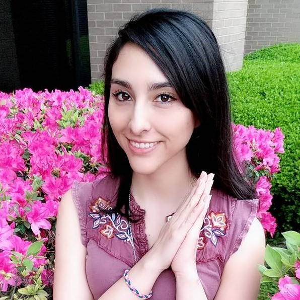

About Me

My philosophy of life is to make myself, my thoughts, my body, my soul, while having fun. I enjoy what I do. Challenging or not, I take pleasure in existing, learning, investigating, experimenting and creating. I try to make my everyday life an adventure.
I have a wide arrange of interests. My endavor of understanding life and myself began with wanting to know the why and the how of things. Since the why was something to be found only at the end, I submerged myself into understanding the how. It was a personal question that got me into chemistry, my biochemistry, and health as it turned out.
But knowing about health wasn't enough, I came to feel very passionate about the brain and thoughts which create every human being as a masterpiece of existance.
Not in a political way, but my journey escalated in so many ways as I found more about Truth and Love. And that's where I am right now. Right in the middle between Truth and Love. Truth I will call my interest in science, technology and parts of things. And Love I will call what I do to feel the Truth, which is exercising, eating healthy, having fun or the WHOLE of things.